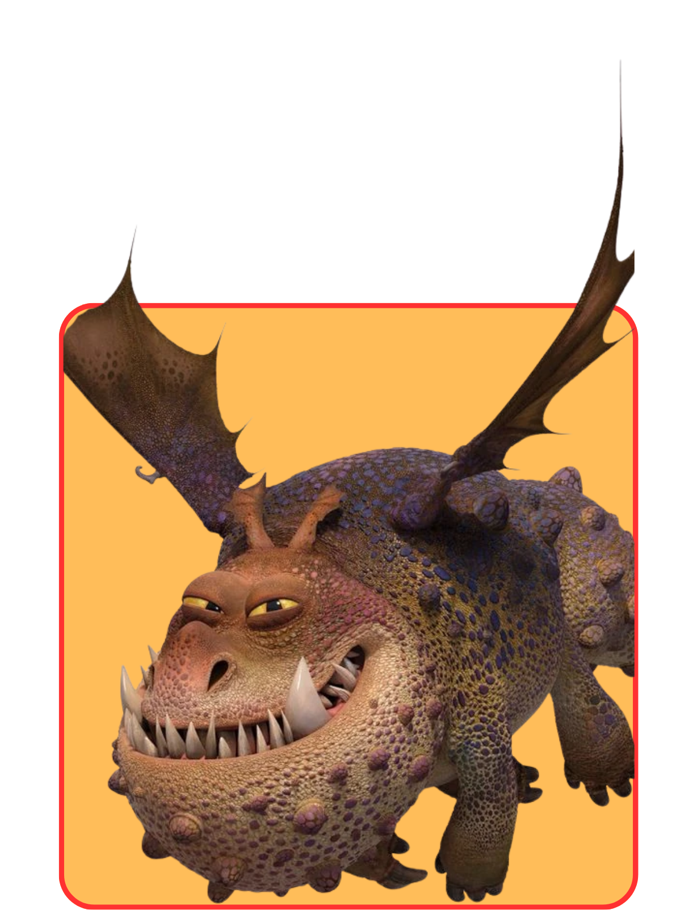
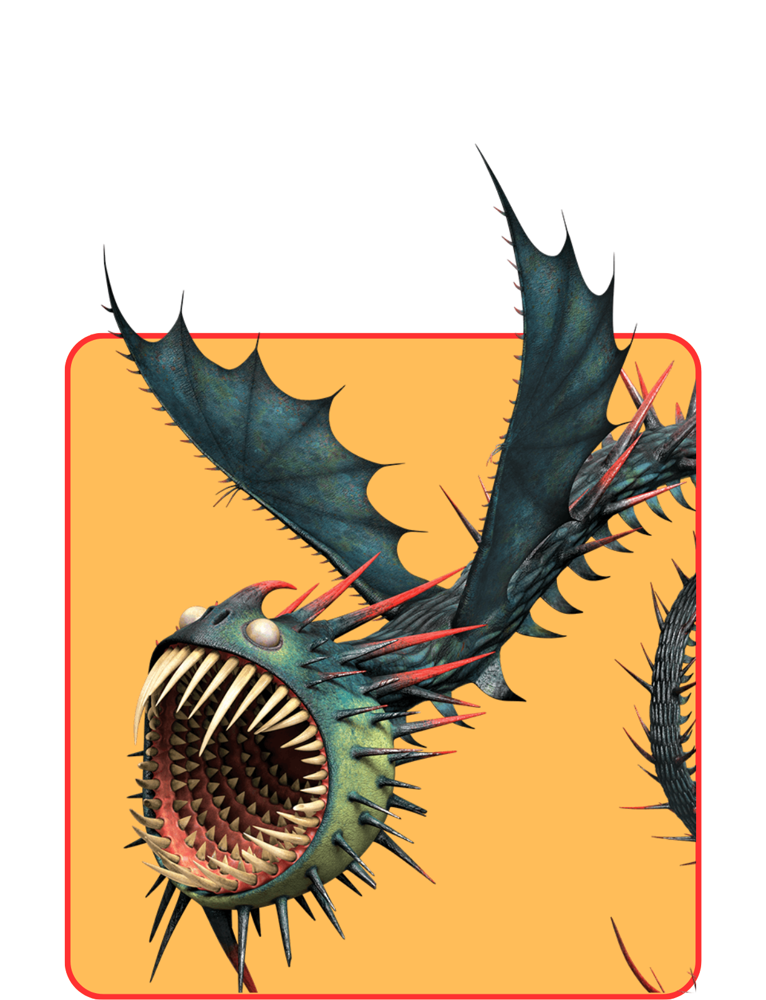
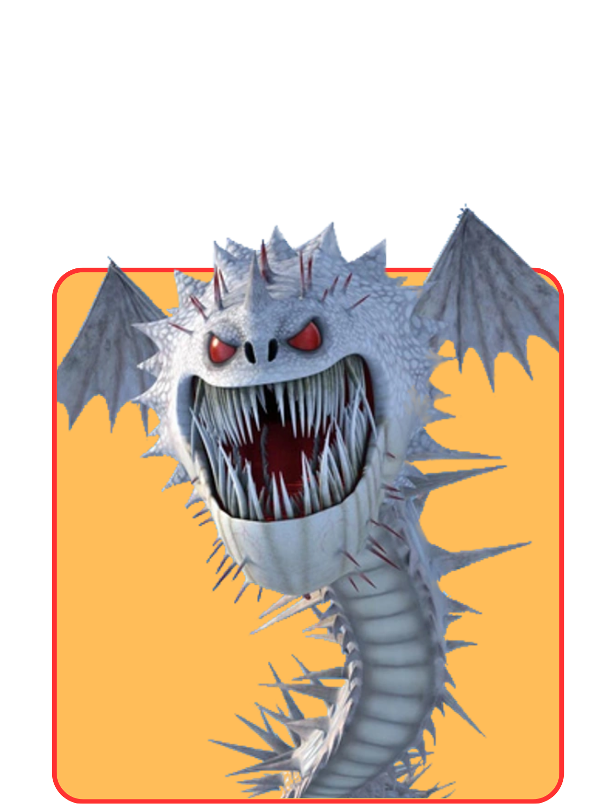
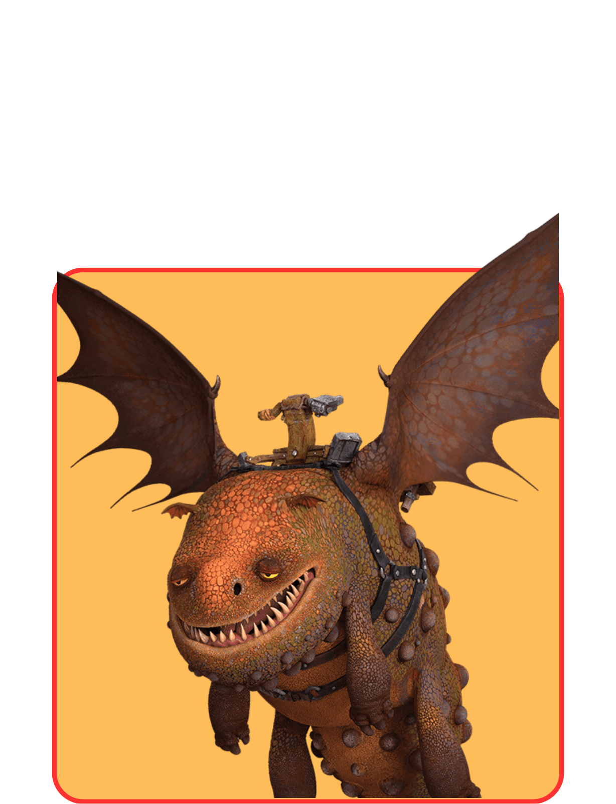
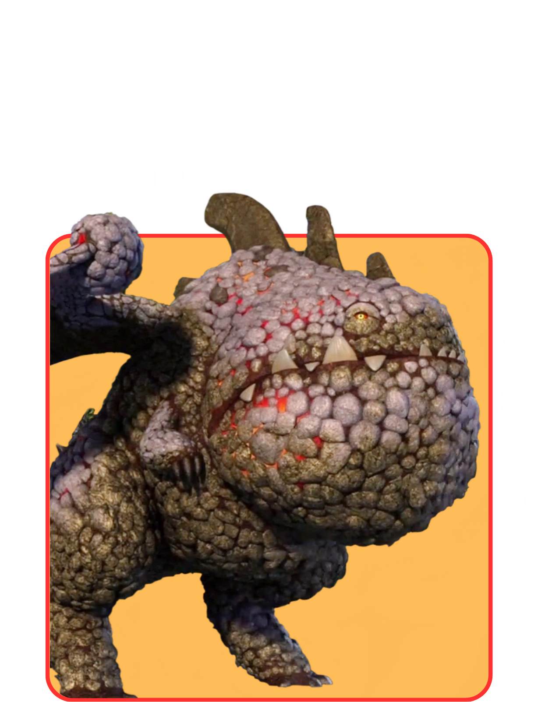
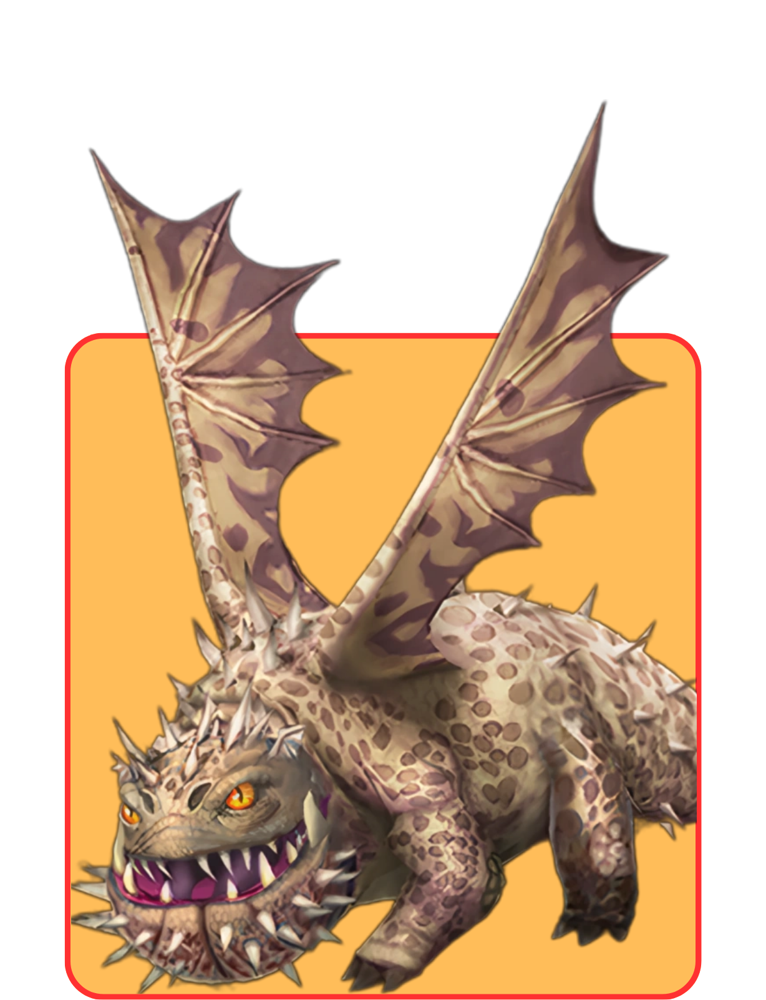
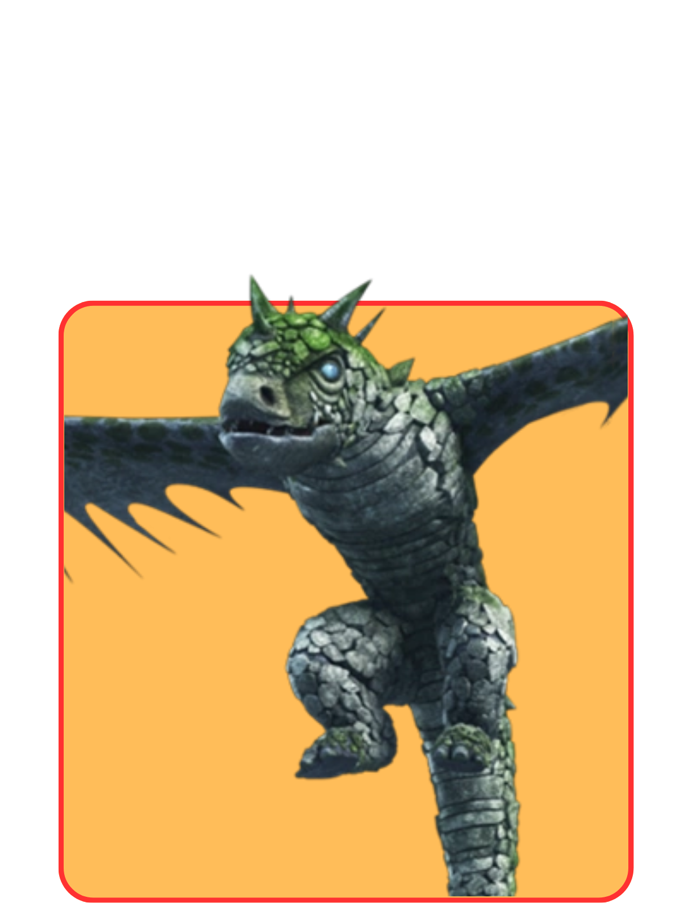
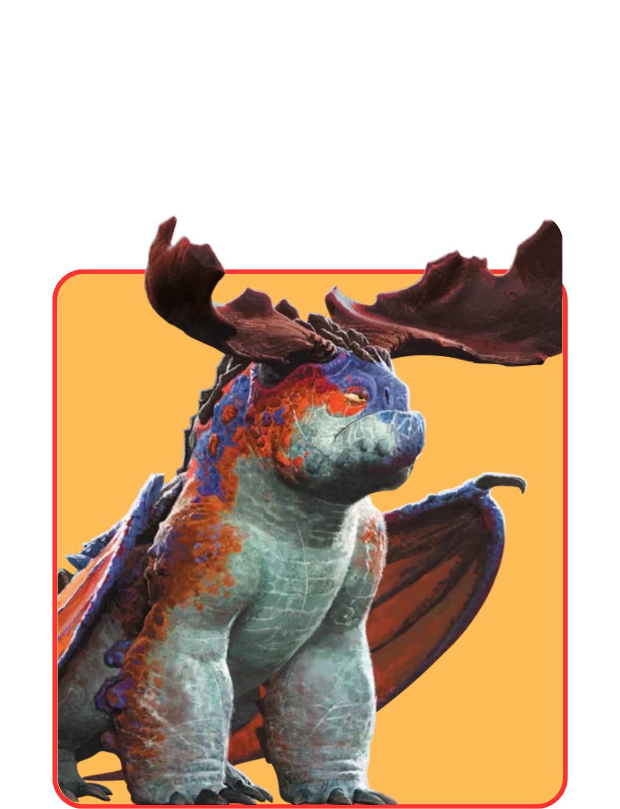

Boulder
Boulder Class dragons are tough and associated with the earth. They can eat rocks, which many of them melt within their stomachs and regurgitate as lava blasts. Although they have small wings compared to their body size, they are able to fly as fast and as high as most other dragons can. According to Fishlegs in Rise of Berk, Boulder Class dragons aren't picky eaters.

GRONKLE

WHISPERING
DEATH
DEATH

SCREAMING DEATH

HOTBURPLE

ERUPTODON

CATASTROPHIC
QUAKEN
QUAKEN

SENTINEL

CRIMSON
GOREGUTTER
GOREGUTTER